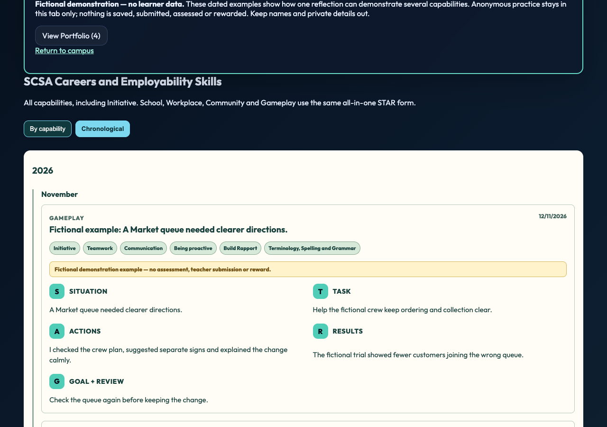
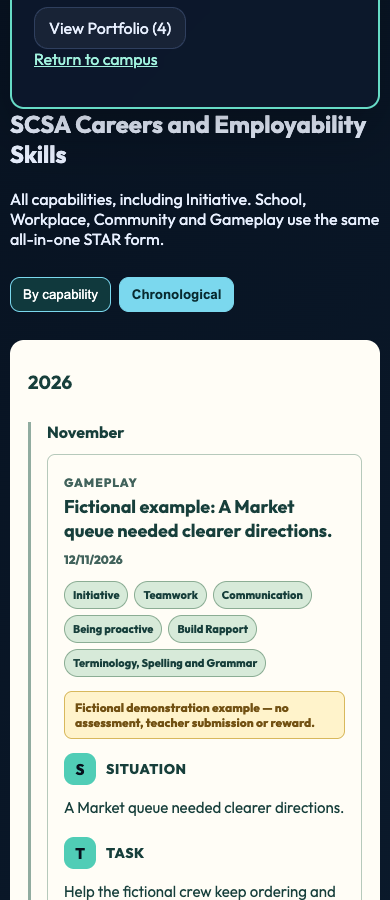

# Portfolio global views and bounded evidence panel —13November2026
## Corrected specification
Published b4f945e repeats switches per capability and has a flat chronology; the inner evidence collapse/grid can leave a blank column or stretch the left rows.
One global By capability / Chronological switch sits above the capability list. Each capability is an expandable dropdown; the same reflection appears under every capability tag. Chronology shows each entry ID once, newest first, grouped by year and month, with all tags retained and undated records visible. View Portfolio follows the same grouping. Within an expanded capability the left identity/description/context/subskills block stays compact and non-collapsing. On desktop the right evidence panel is always visible, internally scrollable and bounded to the full natural left height; expanding its fictional model cannot alter the left height or document position. At phone widths the sections stack naturally and evidence scrolls without horizontal overflow. Inherited white-on-cream entry text and a CSS-visible hidden demo Edit control are corrected.
## Privacy and preservation
Presentation only over the existing current-learner/class-filtered entries or isolated fictional-demo array. No storage, account/bootstrap, authenticated query, review queue, field, identity, role, permissions, backend, reward or public Market form change. Deduplication uses stable entry ID only, never equal free text; id-less legacy entries stay distinct. Grouping sorts copies without rewriting records. Existing anonymous/demo branches and ownership filter are byte-identical to b4f945e; demo remains zero Storage API/backend requests and refresh resets practice. Existing free-text/privacy limitations and global WA UNVERIFIED statuses remain unchanged; no school-wide compliance or authenticated classroom acceptance is inferred.
## Qualification and release limits
Native Chrome1280/390 passes: exactly one switch above full list; seven native capability dropdowns expand/collapse; multi-tag reflection repeats under Initiative/Teamwork/Communication; chronology contains four unique examples in November/October/September, then a new February2025anonymous practice appears in the separate year/month group; tags and newest-first ordering retained; modal equivalent; left geometry unchanged when model expands, desktop evidence height equals full left block and scrolls; mobile stacking/no horizontal overflow. Zero page errors, Storage API and backend calls with an existing fictional cookie; refresh resets practice.415unit tests/91files pass, including invalid-date, duplicate-ID, equal-text and non-mutation regressions.419manifest assets preserved. Required CI source/unit/coverage pass; initial browser server collided with an existing port. A separate-port standard browser run retains its actual outcome separately; no all-CI-green claim.
Unpublished five-file successor to b4f945e. Publish this exact five-file source review, obtain a genuine receipt, then normal guarded serial game push and actual live desktop/phone verification. Update current reader instructions/captures from this same source. Tania/Safari/physical-device/classroom acceptance remain separate; Flyover and staged CI remain excluded.
## Exact source versions
- dashboards/dashboard.css — 100644:2be6c9af4ac4a4a727a06423e42463c5fee6ed56
- dashboards/dashboard.js — 100644:470d9530a6ff93c6403a9b37a9a4e7fdb5c474ec
- dashboards/student.html — 100644:0ecca9d0ea34e78bf784e83efb1c2892d797c4a2
- playable-3d/release-manifest.json — 100644:ac55ad5335d0077beba20cb023ce463bbd24160a
- tests/unit/portfolio-global-views.test.mjs — 100644:23cd6c3c271ecfc6621f4abd9515dab57aea156f
Exact qualified native candidate; publication and Tania acceptance remain separate.Exact qualified native candidate; publication and Tania acceptance remain separate.
Exact qualified native candidate; publication and Tania acceptance remain separate.
Exact qualified native candidate; publication and Tania acceptance remain separate.